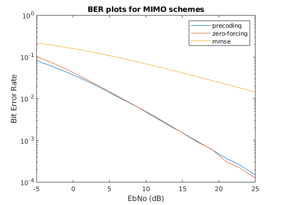

Contents
MIMO Link
clc; clear all;
simulation params
M = 16;
K = log2(M);
n_syms = 1e4;
n_chan = 3;
Ntx = 2;
Nrx = 2;
EbNo = -5:2:25;
snr = EbNo + 10*log10(K);
ber = zeros(3, n_chan, length(snr));
H = sqrt(1/2)*(randn(Nrx, Ntx, n_syms*K, n_chan) +...
1j*randn(Nrx, Ntx, n_syms*K, n_chan));
precoding mimo
U = zeros(Nrx, Ntx, n_syms*K);
S = zeros(Nrx, Ntx, n_syms*K);
V = zeros(Nrx, Nrx, n_syms*K);
precode = zeros(Nrx, 1, n_syms*K);
postcode = zeros(Nrx, 1, n_syms*K);
for ii = 1:n_chan
bits = randi([0 M-1], Ntx, 1, n_syms*K);
tx = qammod(bits, M);
for kk=1:n_syms*K
[U(:,:,kk),S(:,:,kk),V(:,:,kk)] = svd(H(:,:,kk,ii));
precode(:,:,kk) = H(:,:,kk,ii)*V(:,:,kk)*tx(:,:,kk);
end
for jj = 1:length(snr)
n = sqrt(1/2)*(randn(Nrx, 1, n_syms*K)...
+1j*randn(Nrx, 1, n_syms*K));
tx = precode + 10^(-1*snr(jj)/20)*n;
for kk=1:n_syms*K
postcode(:,:,kk) = (S(:,:,kk)^-1)*U(:,:,kk)'*tx(:,:,kk);
end
rx = qamdemod(postcode, M);
[~, ber(1,ii,jj)] = biterr(bits, rx);
end
end
zf mimo
zf_eq = zeros(Nrx, 1, n_syms*K);
txchan = zeros(Nrx, 1, n_syms*K);
W = zeros(Nrx, Ntx, n_syms*K);
for ii = 1:n_chan
bits = randi([0 M-1], Ntx, 1, n_syms*K);
tx = qammod(bits, M);
for kk=1:n_syms*K
txchan(:,:,kk) = H(:,:,kk,ii)*tx(:,:,kk);
end
for jj = 1:length(snr)
n = sqrt(1/2)*(randn(Nrx, 1, n_syms*K)...
+1j*randn(Nrx, 1, n_syms*K));
tx = txchan + 10^(-1*snr(jj)/20)*n;
for kk=1:n_syms*K
W(:,:,kk) = (H(:,:,kk,ii)'*H(:,:,kk,ii))^-1*H(:,:,kk,ii)';
zf_eq(:,:,kk) = W(:,:,kk)*tx(:,:,kk);
end
rx = qamdemod(zf_eq, M);
[~, ber(2,ii,jj)] = biterr(bits, rx);
end
end
mmse mimo
mmse_eq = zeros(Nrx, 1, n_syms*K);
txchan = zeros(Nrx, 1, n_syms*K);
W = zeros(Nrx, Ntx, n_syms*K);
for ii = 1:n_chan
bits = randi([0 M-1], Ntx, 1, n_syms*K);
tx = qammod(bits, M);
for kk=1:n_syms*K
txchan(:,:,kk) = H(:,:,kk,ii)*tx(:,:,kk);
end
for jj = 1:length(snr)
n = sqrt(1/2)*(randn(Nrx, 1, n_syms*K)...
+1j*randn(Nrx, 1, n_syms*K));
tx = txchan + 10^(-1*snr(jj)/20)*n;
for kk=1:n_syms*K
W(:,:,kk) = (H(:,:,kk,ii)'*H(:,:,kk,ii) + ...
eye(Ntx)*10^(-1*snr(jj)/20))^-1 * H(:,:,kk,ii)';
mmse_eq(:,:,kk) = W(:,:,kk)*tx(:,:,kk);
end
rx = qamdemod(mmse_eq, M);
[~, ber(3,ii,jj)] = biterr(bits, rx);
end
end
ploting
ber = mean(ber,2);
semilogy(EbNo,ber(1,:),'DisplayName','precoding');
hold on;
semilogy(EbNo,ber(2,:),'DisplayName','zero-forcing');
hold on;
semilogy(EbNo,ber(3,:),'DisplayName','mmse');
title('BER plots for MIMO schemes');
xlabel('EbNo (dB)');
ylabel('Bit Error Rate');
legend('show');
